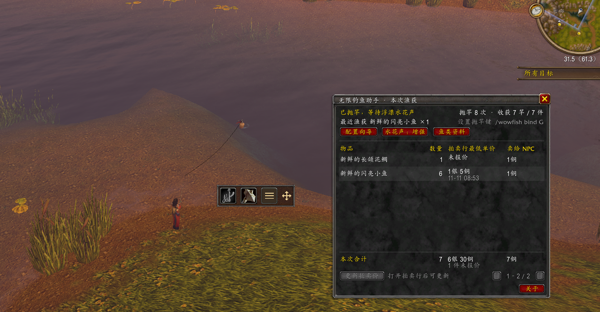

One-click gear swaps
Choose your rod and weapon in the setup wizard. Swap with a shortcut or an on-screen button you can move and lock.
World of Warcraft: Forever add-on
Fishing companion
See what you caught, compare auction listings with vendor value, and keep a record of where the fish were biting.
v0.4.0 · Interface 16001 · Simplified Chinese in-game UI

Choose your rod and weapon in the setup wizard. Swap with a shortcut or an on-screen button you can move and lock.
Catches are grouped by item. Refresh manually at the Auction House to compare the lowest listing with vendor value. Timestamps and unpriced items are shown.
Search by fish name, location, category, or item ID. Your character’s observed catches are saved alongside reference locations with source labels.
Download the ZIP and copy the extracted WowfFishing folder into _forever_/Interface/AddOns/.
Restart WoW and enable 「无限钓鱼助手」 in the add-on list at character selection. Enter /wowfish after logging in.
Enter /wowfish setup. Choose your rod, equip the weapon you want to switch back to, then equip the selected rod and save your shortcut. Drag the on-screen button into place and click 「固定」 to lock it.
Enter /wowfish bind G, replacing G with any supported free key. Enable the game’s Interact Key, then press your fishing key once to cast and again to reel in.
A free, independently maintained add-on with publicly readable source. Casting and reeling each require a player key press. Auction values reflect listings at the time of lookup. Settings, quotes, and catch observations are saved locally by the game.